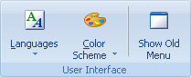
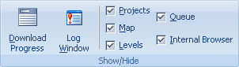
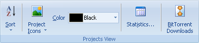
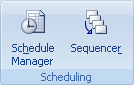

Используйте вкладку Вид для включения или отключения разных функций пользовательского интерфейса Offline Explorer Pro и для просмотра или изменения видимых настроек Проекта.

Языки - Содержит список всех доступных национальных языков пользовательского интерфейса.
Цветовая схема - Изменение цвета пользовательского интерфейса.
Показать старое меню - Выключение ленты и переключение к старому главному меню и панели инструментов. Используйте меню Вид - Показать Ленту для обратного переключения.

Состояние загрузки - Включает или отключает панель загрузочных соединений внизу дерева Проектов.
Журнал - Включает или отключает запись журнала сообщений загрузки.
Проекты - Включает или отключает дерево Проектов.
Карта - Включает или отключает карту загруженных web-сайтов.
Уровни - Включает или отключает вкладку, которая показывает все ссылки в загруженных web-страницах.
Очередь - Включает или отключает очередь загрузки.
Встроенный браузер - Включает или отключает панель встроенного браузера.

Сортировать - Сортировка Проектов в выбранной папке по имени, URL или времени загрузки.
Значок проекта - Изменение значка выбранного Проекта.
Цвет - Изменение цвета выбранного Проекта в дереве проектов.
Статистика - Открытие диалога статистики Проекта - время загрузки, количества файлов, размер и так далее.
BitTorrent - Открывает диалог со всеми Вашими torrent-загрузками для старта загрузки, удаления и выполнения других действий.

Управление расписанием - Включает или отключает панель управления расписанием загрузки.
Последовательность запуска - Включает или отключает последовательность запуска, которая позволяет загружать Проекты один за другим.